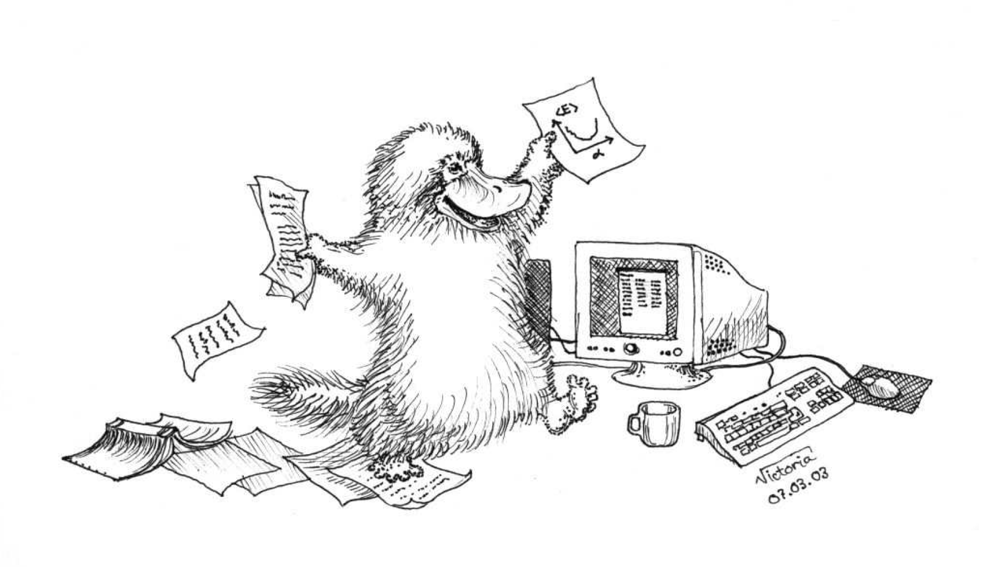

Summary of course and the final oral exam
Spring 2018
Learning outcomes
Our ideal about knowledge on computational science
Does that match the experiences you have made this semester?
Topics we have covered this year
- Introduction to c++ programming and object orientation
- How to write scientific reports
- Linear algebra and eigenvalue problems. (Lecture notes chapters 6.1-6.5 and 7.1-7.5 and projects 1 and 2).
- Ordinary differential equations (Lecture notes chapter 8 and projects 3 and 4 )
- Monte Carlo methods in physics (Lecture notes chapters 11, 12 and 13, project 4)
Linear algebra and eigenvalue problems, chapters 6.1-6.5 and 7.1-7.5
- How to handle vectors and matrices
- Gaussian elimination and LU decomposition (project 1)
- How to solve linear equations (project 1)
- How to obtain the inverse and the determinant of a real symmetric matrix
- Cubic spline
- Tridiagonal matrix decomposition (project 1)
- Householder's tridiagonalization technique and finding eigenvalues based on this
- Jacobi's method for finding eigenvalues (project 2)
Monte Carlo methods in physics (Chapters 11, 12 and 13)
- Random walks and Markov chains
- Generation of random numbers
- Monte Carlo integration
- Probability distributions and their properties
- Errors in Monte Carlo calculations (statistical errors)
- Metropolis algorithm (project 4)
- Applications to statistical physics systems (project 4)
- Brief excursion into quantum mechanical systems (project 4)
Ordinary differential equations (Chapter 8)
- Euler's method and improved Euler's method, truncation errors (projects 3 and 4)
- Runge Kutta methods, 2nd and 4th order, truncation errors (projects 3 and 4)
- Leap-frog and Verlet algoritm (projects 3 and 4)
- How to implement and solve a second-order differential equation, both linear and non-linear.
- How to make your equations dimensionless.
Partial differential equations, chapter 10, not covered this year
- Set up diffusion, Poisson and wave equations up to 2 spatial dimensions and time
- Set up the mathematical model and algorithms for these equations, with boundary and initial conditions. The stability conditions for the diffusion equation.
- Explicit, implicit and Crank-Nicolson schemes, and how to solve them. Remember that they result in triangular matrices (project 4).
- Diffusion equation in two dimensions.
Final presentation
Select the project you liked the most among projects 2-4. Alternatively, if there are other topics of relevance you would like to present, feel free to suggest (send me an email however). Your presentation (bring your own laptop) should include- Introduction with motivation
- Give an overview of the theory and numerical algorithms employed
- Discuss the implementation of your algorithm and how you verified it and validated it. Discuss for example various tests you made.
- Present and discuss your results
- Summary, conclusions and perspectives
- Anything else you think is important. Useful to have backup slides
What? Me worry?

Computational science courses at MSU
- PHY905 section 004 High-Performance computing
- New department offers degrees in Computational Science and many new courses
- See special courses offered now
- Undergraduate courses
- Graduate courses
Best wishes to you all and thanks so much for your efforts this semester
